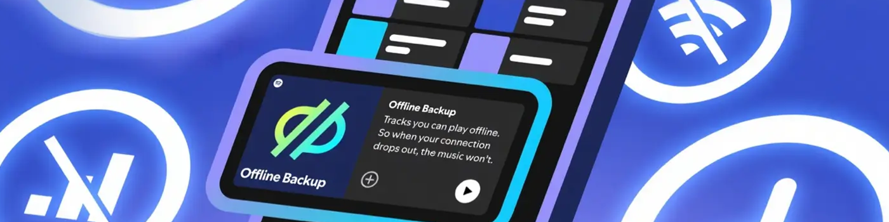
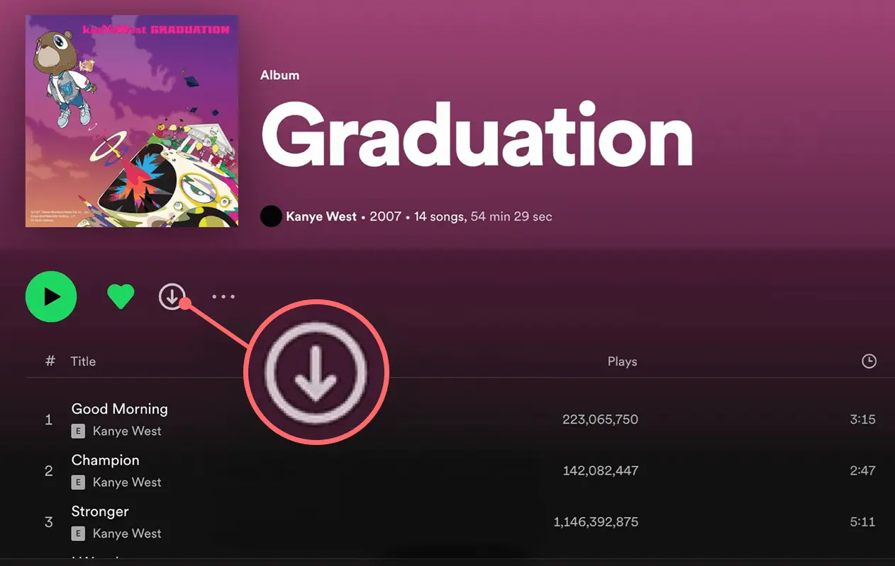

如何離線收聽 Spotify（即使沒有 Premium）
你幾乎每天都會使用 Spotify 聽音樂和播客。但壹旦離線，播放內容就變得很困難。
事實上，Spotify 支持離線收聽。作為 Premium 用戶 ，你可以下載多達 10000 首曲目，並隨時欣賞，無需網絡連接。
在本文中，我們將指導你如何使用 Spotify 的離線收聽功能，包括 Premium 用戶如何下載並設置離線播放。我們還將為非訂閱用戶分享壹些替代方案，讓你即使在離線狀態下也能享受 Spotify 的樂趣。
你可以離線收聽 Spotify 嗎？
是的，只要你訂閱了 Spotify Premium 即可。Spotify 為 Premium 用戶提供離線收聽功能，讓你可以提前下載音樂，即使沒有網絡連接也能播放。此功能在通勤、商務旅行或數據流量有限的情況下尤為實用。
但是，它也有壹些限制。例如，你需要 至少每 30 天連接壹次互聯網才能播放離線內容。
通過高級訂閱離線收聽 Spotify
訂閱 Premium 後，你可以在多台設備上下載 Spotify 內容，離線播放將不再受限。不過，Spotify 僅支持下載整張專輯、播客或播放列表。如果你想保存單首歌曲，則需要在前下載前將其添加到播放列表中。
下載過程很簡單：打開你想要下載的專輯、播放列表或播客，然後點擊頁面上的"下載"按鈕。下載完成後，這些內容將出現在你的離線庫中，無需網絡連接即可隨時播放。
打開 Spotify 離線模式
下載完想要收聽的內容後，建議啟用" 離線模式 "。這樣，即使你處於離線狀態，Spotify 也不會嘗試加載在線資源，從而有助於避免緩沖或不必要的數據使用。
要在手機或平板電腦(iOS/Android)上啟用離線模式 ：
- 打開 Spotify 應用程序並點擊頂部的個人資料圖片。
- 前往"設置"。
- 找到並點擊"播放"選項。
- 打開"離線"開關。
在桌面上啟用離線模式(Windows / Mac)：
- 對於 Mac 用戶 ： 單擊屏幕頂部的 Apple 菜單 > Spotify > 離線模式。
- 對於 Windows 用戶 ： 單擊左上角的"..."> 文件 > 離線模式。
啟用離線模式後，Spotify 將自動隱藏你尚未下載的內容，整個界面將顯示為"離線"。此時，你可以盡情享受音樂，無需擔心信號不佳或加載失敗。
為了獲得更佳的離線聆聽體驗，你可以在偏好設置中調整下載音頻質量。根據你的偏好設置和設備存儲容量，你可以選擇"高"或"非常高"。
管理 Spotify 上的下載
離線功能固然方便，但隨著時間的推移，下載的內容會累積並占用大量存儲空間。如果你發現設備空間不足，或者 Spotify 開始崩潰或卡頓，清理壹些不常聽的下載內容或許是個好主意。
你可以前往" 你的列表 "，找到不再需要的專輯或播客，然後單擊旁邊的綠色"向下箭頭"圖標進行刪除。
除了手動管理之外，有時你會註意到某些下載的內容"自行消失"。這通常是由以下原因之壹造成的：
- 超過 30 天沒有連接互聯網
- 卸載並重新安裝 Spotify 應用
- 在超過 5 台設備上下載內容(系統將自動從最少使用的設備中刪除內容)
- SD 卡問題或應用程序版本過時
此外， 所有的下載內容都與你當前的帳戶綁定 。如果你切換帳戶或訂閱到期，下載的內容將無法播放。為了長期使用離線播放，穩定且價格合理的高級訂閱至關重要。
如何以更低的價格獲得 Spotify Premium？
雖然離線播放功能非常吸引人，但官方高級訂閱價格不菲，日積月累下來，成本會非常高。對很多人來說，僅僅為了離線功能付費似乎並不值得。
幸運的是，我找到了壹個更實惠的方法：在 奈飛小鋪 上購買壹個共享的 Spotify Premium 帳戶 。價格只有官方價格的壹半，甚至更低，但你仍然可以享受所有 Premium 功能，包括離線下載、無廣告收聽等等。
我最喜歡的是，雖然是共享賬戶，但每個用戶都有自己的個人資料。你仍然可以添加收藏夾、創建播放列表和下載音樂，而不必擔心與其他人混淆，既安心又穩定。
如何在沒有 Premium 的情況下離線收聽 Spotify？
Spotify 上的離線播放功能僅適用於 Premium 用戶，但如果你尚未訂閱，可以嘗試以下兩種方法享受離線收聽。
使用 Spotify 的免費試用版
Spotify 經常會為新用戶提供 Premium 的免費試用，試用期通常為壹個月，促銷期間有時甚至長達三個月。試用期間，你可以離線收聽、下載歌曲，並在沒有網絡連接的情況下享受播放。
只需前往官方網站，註冊賬戶，然後選擇試用方案即可。請註意，試用期結束後，系統將自動續訂為付費訂閱，因此請務必在到期前取消，以避免產生不必要的費用。
使用第三方下載工具
有幾種可用的第三方工具或軟件，例如 Audials One 和 Sidify ，它們可以在後台錄制你在 Spotify 上播放的音頻並將其保存為本地文件以供離線播放。
然而，這些工具的免費版本大多只提供基本功能，如果你想要更高的音質或更快的處理速度，則可能需要單獨付費。此外，它們的兼容性會因設備而異，並且性能在不同系統上也可能存在差異。
結論
總而言之，雖然免費試用或第三方工具可以在壹定程度上提供離線收聽的方式，但這些方法往往存在局限性，可能無法滿足長期需求。
如果你經常使用 Spotify，我建議你直接訂閱 Premium。它不僅更穩定、更省心，而且離線收聽體驗也更流暢、更可靠。你可以通過 奈飛小鋪 等平台以更實惠的價格獲得完整的 Spotify Premium 帳戶，其功能和便捷性物超所值。
常問問題
如何離線收聽 Spotify？
要使用離線播放功能，你必須是Spotify Premium用戶。訂閱後，請在聯網狀態下添加並下載你想要的歌曲、專輯或播客。完成後，在應用中切換到離線模式，即可在無網絡連接的情況下播放已下載的內容。
如何在 Spotify 上切換到離線模式？
在手機或平板電腦上，點擊你的個人資料圖片進入"設置和隱私"，然後在"數據保護程序和離線"下啟用"離線模式"。在桌面上，Mac用戶可以在頂部菜單中進入Spotify>離線模式，而Windows用戶需要點擊左上角的"..."圖標，選擇"文件">"離線模式"來啟用它。
我可以在 Spotify 上下載多少首歌曲？
Spotify Premium 用戶每台設備最多可下載10000 首歌曲，最多允許5 台設備離線使用。這意味著單個帳戶可以存儲大約 50，000 首下載的歌曲。
Spotify 的離線模式可以持續多長時間？
Spotify Premium 用戶的離線模式最長可持續 30 天。在此期間，你可以在沒有互聯網連接的情況下播放已下載的內容。如果你超過 30 天未連接互聯網，離線內容將停止播放，你需要重新連接才能恢復訪問。
Spotify 在離線時還能跟蹤嗎？
是的，即使你處於離線狀態，Spotify 也會在本地跟蹤你的播放數據。壹旦你重新連接到互聯網並打開應用程序，數據將自動同步，以更新你的收聽歷史記錄、個性化推薦和播放統計信息。